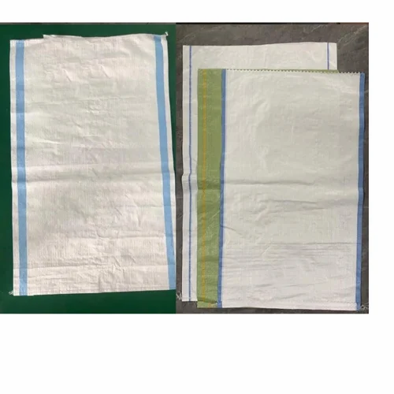
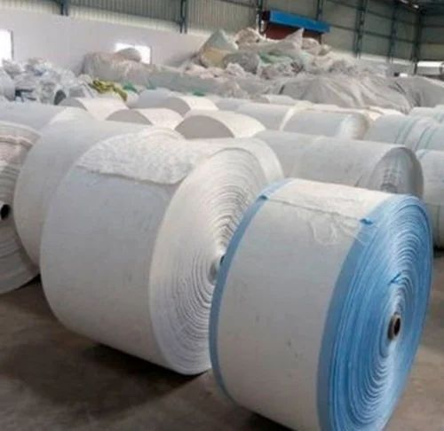

PP / HDPE Woven Sacks
Plain and printed woven polypropylene sacks for fertilizer, grain, chemicals, sand and general industrial use. Standard and laminated options.

BOPP Laminated Bags
High-gloss BOPP laminated bags with up to 8-colour printing for rice, flour, spices, sugar, animal feed and branded retail packs.

FIBC / Jumbo Bags
Type A, B, C (conductive) and D (antistatic) flexible intermediate bulk containers for chemicals, minerals, food-grade and construction.

Cement & Valve Bags
Block-bottom valve bags, pinch-bottom and open-mouth cement sacks with micro-perforated air-exhaust fabric for high-speed filling lines.

Sugar & Grain Bags
Food-safe PP woven and laminated bags for sugar, rice, wheat, pulses and animal feed. FSSAI compliant inner liners available.

PP / HDPE Woven Fabric
Flat and tubular woven fabric rolls for bag converters, tarpaulin manufacturers, geotextile producers and industrial applications.